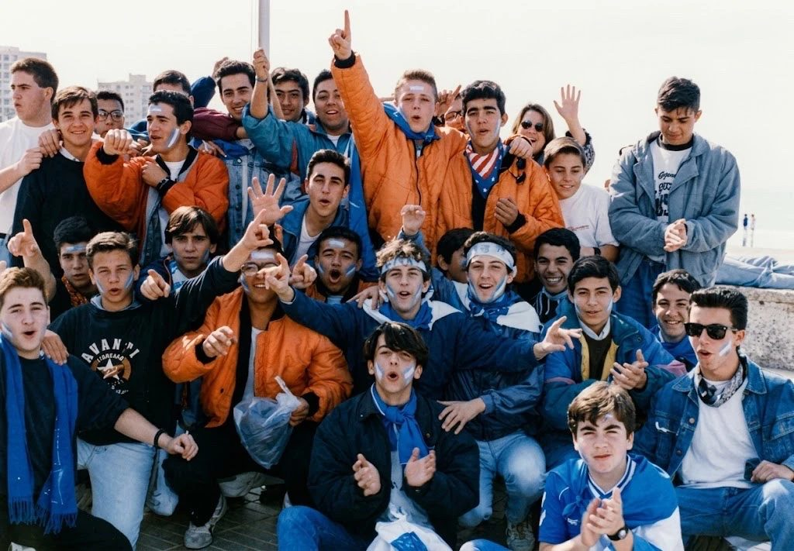

De Ultra Sherry a Hools XCD: la historia de la grada de animación del Xerez

Foto: ArchivoLa grada de animación del Xerez CD tiene casi cuatro décadas de historia. Nació a mediados de los ochenta en el viejo estadio Domecq, encontró en Ultra Sherry su grupo más influyente a partir de 1991 y se dividió en 2013 con el nacimiento del Xerez Deportivo FC. Desde entonces, los Hools XCD son quienes animan al Xerez CD.
Según las historias recopiladas por los propios aficionados, entre ellas el libro Kolectivo Sur XX Aniversario: La historia de los ultras del Xerez, publicado en 2011, el movimiento de animación xerecista arrancó con el ascenso a Segunda División en la temporada 1985/86.
Los años del Domecq
En la temporada 1986/87 ya había varios grupos en el viejo estadio Domecq. División Blanquiazul, formado sobre todo por estudiantes de los colegios El Pilar y La Salle, se colocaba en la esquina de preferencia con el fondo sur. En ese mismo fondo se situaba un primer grupo llamado Ultra Sherry, conocido por sus banderas y banderones. Completaban la grada Los Pantera, que tomaron su nombre del jugador ecuatoriano "Pantera" Benítez.
El salto a Chapín
Con el traslado a Chapín en la temporada 1988/89 nacieron Ultramuces, en el fondo sur, y Fondo Azul. Fueron años de grandes desplazamientos: según esas mismas fuentes, en la temporada 1989/90 unos 1.500 xerecistas viajaron a Huelva y al Santiago Bernabéu para ver al Xerez ante el Castilla.
El descenso a Segunda División B en 1990/91 cambió el panorama. Fondo Azul y Ultramuces desaparecieron, y solo un pequeño grupo, los Dalton's, formado por antiguos miembros de Ultramuces, siguió en la grada hasta la temporada siguiente.
Ultra Sherry, el grupo que revolucionó Chapín
En 1991 nació un nuevo Ultra Sherry, distinto del de los años ochenta, formado por jóvenes aficionados y con secciones propias como Cockney Sherry Crew y Youth Xerez. Fue el grupo que, según los aficionados de la época, revolucionó la grada de Chapín.
El grupo cambió de nombre en 1995 y pasó a llamarse Hinchada Azul. Un año después, en 1996, adoptó el nombre de Kolectivo Sur, con el que se convirtió en el grupo de animación más longevo del xerecismo. En una entrevista publicada en 2009, el propio grupo afirmaba que su única política era el Xerez CD.
2013: la división
La crisis económica del Xerez CD en 2013 partió en dos a la afición. El 28 de junio de ese año, un grupo de aficionados fundó el Xerez Deportivo FC, después de una votación en la que el 75,79 % respaldó la creación del nuevo club.
El Kolectivo Sur sometió su futuro a una votación interna. La mayoría eligió el nuevo proyecto, y en julio de 2013 el grupo anunció en un comunicado que animaría al Xerez Deportivo FC "en la categoría que corresponda".
Los miembros que no quisieron dejar al Xerez CD formaron los Hools XCD. Empezaron siendo entre 15 y 20 personas y celebraron su quinto aniversario en 2018. Hoy su pancarta sigue acompañando al equipo, como se vio el pasado domingo en la grada del Juan Guedes en la victoria ante el Tamaraceite.
🇬🇧 Read in English ← Volver a la portada